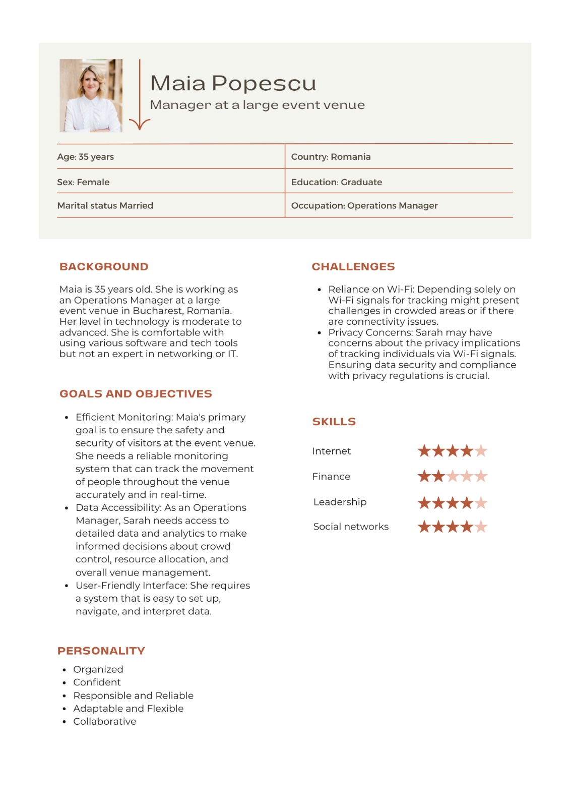
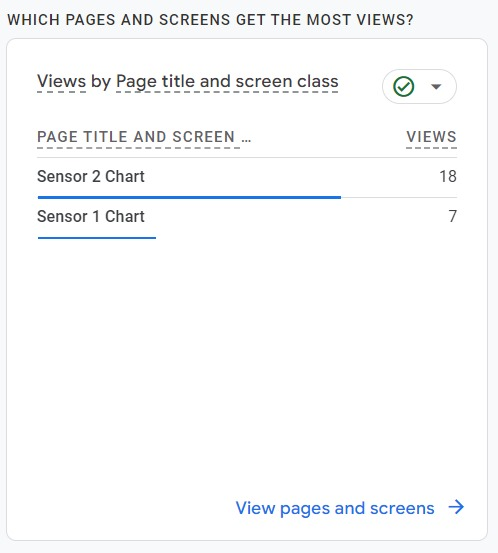
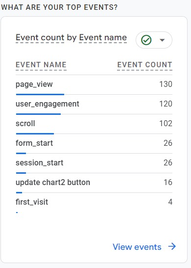
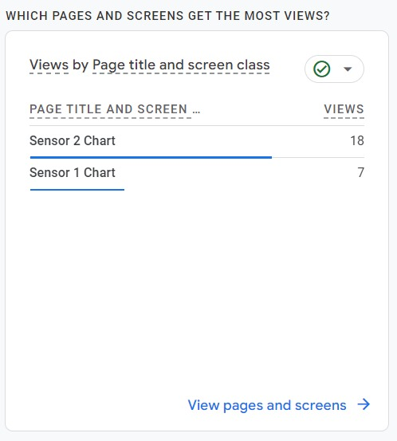
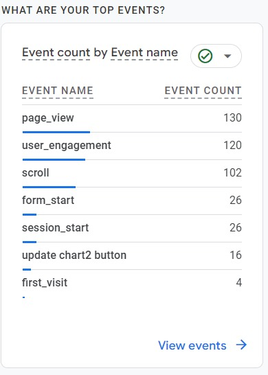
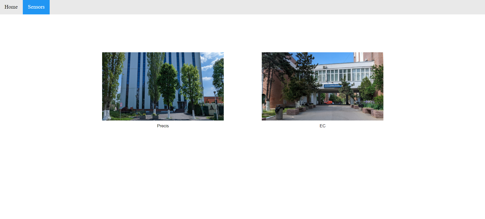
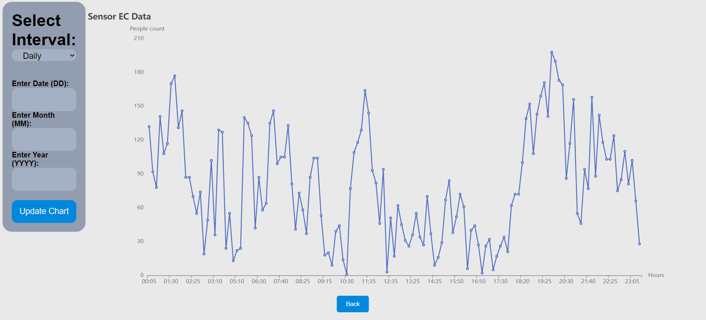
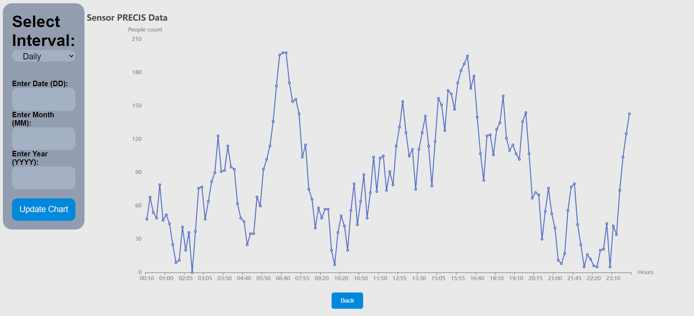

WiSenser
Our Team
Roman Adrian
- Chief Executive Officer
- Project Manager
- Fullstack Developer
Fodor Bianca
- Chief Marketing Officer
- UI/UX Designer
- Fullstack Developer
Marinescu Sebastian
- Chief Technology Officer
- Devops Engineer
- Fullstack Developer
Varzaru Mihnea
- Chief Financial Officer
- Sales & Logistic Manager
- Fullstack Developer
Describe the problem
It is very difficult to keep track of the people (e.g. customers) that are at a certain point in time at a given location. This information could help mall owners place their shops more efficiently, festival organizers place their arenas or food stands better or help institutions monitor certain places to prevent accidents or even atrocities.
Your solution
Our solution is a crowd monitoring system that relies solely on Wi-Fi signals to keep track of the people at a certain geographic location. Research has shown that the Wi-Fi technology can be used to track pedestrians because smartphones periodically broadcast Wi-Fi signals in the near zone in order to detect new routers to which they could connect. These signals are called probe requests and contain valuable information such as the sender MAC address which can act as a main identifier for us. These addresses are randomized and this makes the work a lot more difficult, but here will come in place our product which will estimate through ML algorithms and more the number of devices detected.
In the end, the customer will have access to an interface with the number of detections for every interval of the day (the interval will generally be 5 minutes or as much as the customer wishes). The data will come from sensors (Raspberry Pis) that are deployed by us at the required location.
Customer segment
Mobile crowd sensing will radically transform several sectors of our economy such as: environmental monitoring and transportation, business, healthcare and social networks. We can have a wide range of customers: from governments that want to start implementing the idea of a smart city, to entertainment businesses that may want better organized facilities for their customers.
Competition
The domain we are focusing on is currently in the incipient phase. We could only find a few competitors:
Senstar
- Senstar crowd detection
- They are using machine learning to detect people in surveillance cameras.
- This might have similar results to our product but it is far more expensive and complex
Optex
- Crowd Alert Sensor
- This product is more reliable on counting the number of persons in a crowd, but at the same time it’s more rigid: you have to install the pillar in the image below, and people would have to enter/exit a fixed entrance.
- While this solution works very well for a supermarket, it is not feasible for an open space event, for example a street festival.
Advantages over the competition
Our advantages would be:
- (claimed) Accurate results
- We handle all deployment processes (especially for sensors)
- We are willing to customize the product to the customer’s need
Key metrics
- Accuracy and precision
- Processing power need
- Sustenability
- Cost + Maintenance cost
Cost structure
Infrastructure Costs:
- Sensors: Costs for purchasing and installing the Raspberry Pis
- Networking Equipment: Switches, and other networking hardware
- Server Infrastructure: Hosting and maintaining the tracking software and data storage
Personnel Expenses:
- Development Team: Salaries for software engineers and developers
- Operations Team: Salaries for staff managing and system operations
- Sales and Marketing: Salaries for the sales and marketing team
Data Security and Privacy:
- Compliance Costs: Ensuring compliance with data privacy regulations
- Security Measures: Implementing data encryption, firewalls, and other security measures
Marketing and Sales:
- Advertising and Promotion: Costs for marketing campaigns and promotions
- Sales and Distribution: Sales team expenses and channel distribution costs
Maintenance and Upgrades:
- Software Updates: Ongoing development and updates for the monitoring software
- Hardware Maintenance: Repairs and upgrades to Raspberry Pis and networking equipment
Data Storage and Processing:
- Cloud Services: Costs associated with storing and processing large amounts of data
- Data Backup and Recovery: Ensuring data integrity and availability
Legal and Regulatory:
- Legal Consultation: Fees for legal advice and compliance
- Regulatory Fees: Fees for data collection and privacy compliance
Revenue Streams
Subscription Services:
- Offer tiered subscription plans to venues and event organizers for real-time crowd monitoring and analytics
Data Licensing:
- License aggregated and anonymized crowd data to third-party businesses and researchers for market analysis and insights
Consulting Services:
- Provide consulting and customization services to clients for optimizing their crowd management strategies
Advertising and Sponsorship:
- Partner with sponsors or advertisers to display targeted ads on the monitoring platform
Data Insights Reports:
- Offer detailed reports and analytics to clients, enabling them to make data-driven decisions regarding crowd management and event planning
Custom Development:
- Develop custom tracking solutions for specific clients with unique needs
Hardware Sales and Leasing:
- Offer custom Wi-Fi sensors (Raspberry Pis) and related hardware for sale or lease to venues and event organizers
API and Integration Services:
- Provide APIs and integration services for clients to incorporate crowd monitoring data into their existing systems and applications
Customer Discovery
How we identified the problem?
Identifying the problem of effectively tracking people at a specific location, such as in events, public spaces, and venues was a crucial thing when developing our product.
First of all, we thought about it based on our personal experience. This could be: noticing long queues at stores, overcrowded events, or difficulty in buying food/drinks at a festival with a large venue.
Secondly, we often used to hear complaints among our friends/family/news after attending such events/festivals. These complaints are often related to: long waiting times, overcrowding, or inaccessible stores/courts at a festival.
Last but not least, we investigated the existing crowd management solutions in the previous milestone and realized there are very few competitors, and the focus on this problem is still in the incipient phase.
What we thought is a solution for the problem?
Our solution is a crowd monitoring system that relies solely on Wi-Fi signals to keep track of the people at a certain geographic location.
Research has shown that the Wi-Fi technology can be used to track pedestrians because smartphones periodically broadcast Wi-Fi signals in the near zone in order to detect new routers to which they could connect.
These signals are called probe requests and contain valuable information such as the sender MAC address which can act as a main identifier for us. These addresses are randomized and this makes the work a lot more difficult, but here will come in place our product which will estimate through ML algorithms and more the number of devices detected.
In the end, the customer will have access to an interface with the number of detections for every interval of the day (the interval will generally be 5 minutes or as much as the customer wishes). The data will come from sensors (Raspberry Pis) that are deployed by us at the required location.
Our plan for customer discovery
Our plan is to conduct an online survey with people from different businesses (mall employee, restaurant manager, festival volunteer) and understand how our product can help them, based on their responses and honest opinion.
The process described in detail
We created an online form, which can be found here. This form was sent to known people (friends, colleagues) who work for companies that could benefit from our product.
One of the people that answered our form is Corina Vlascianu, who is a manager at a clothing store (Bershka) in Mall Parklake.
One answer that we want to highlight is regarding how she would plan to integrate our product in her store:
I see great potential in using your product to enhance the shopping experience for our customers. Some ideas could be: allocating the staff more efficiently (during busy hours/days vs more quiet days). Or for when we host special sales, we can use your system to predict and plan for increased foot traffic. This will help us arrange promotions and allocate the staff well in advance, ensuring that we make the most of these opportunities.
Corina Vlascianu — Bucharest, RO
Also she estimated that the size of the crowd she intends to monitor with our product will be under 100 people.
Another interesting answer was from Maria Tristiu, who was a volunteer at the “George Enescu” festival:
One of our biggest issues during the festival was to identify bottlenecks, congestion points, or areas with excessive queuing. Having a product that will help us get this kind of internformation in real time would be really nice.
Maria Tristiu — Bucharest, RO
We also held several face-to-face/phone interviews with potential customers. The full interviews were documented here. One idea from the interviews was from a resturant owner that mentioned:
I've been trying to calculate the profit per table based on the number of people. I currently use a camera with facial detection, but it can't differentiate between customers and staff. It's causing some inaccuracies in my calculations. I need a product that can tell me how many clients I have at a table.
Andreas Oprisan — Restaurant Owner
Our product seems to be suitable for solving his issue, validating our idea for the resturant sector.
Another good validation come from ex STB Director and Chief Engineer. Some of his words were:
Currently, we have GPS on our buses and cameras inside them, collecting various data. However, we lack information about the number of people at bus stations, which is crucial for establishing an efficient traffic schedule.
Daniel Titu — STB Director and Chief Engineer
This in another problem that our product can solve, validating our idea also in the transportation field.
How these insights have affected our product?
After discussing with our potential customers, we realized that crowd detection tools are a big request for public spaces.
A key question that everyone was asking us is: “Can we predict how many people will be here tomorrow, or the day after tomorrow, at this hour?”.
Our answer is yes, based on data previously collected at the customer location. To increase our chances in selling our product, we can deploy our device in public spaces near potential customers and collect data for a couple of days/weeks.
This way, when a customer asks the question above, we can already offer them some results based on the data previously collected.
Do we consider that we are ready to move to the Customer Validation stage?
I think we are in a good position, based on the feedback received.
A good argument would be the fact that customers seem to encounter the problem that we are trying to solve.
This gives value to our product and enables us to solve it.
Wireframe and Landing Page
UX
Face-to-face interviews with our users
Interview with Restaurant Owner
We had a phone interview with Andreas Oprisan, owner of Restaurant "Vatra" in Bucharest. We summarized the conversation and posted it below. As proof that the conversation took place, we will leave the phone number of the person to be contacted for more details (phone number: +40721160094).
Before we dive into the details, could you share some of the specific needs or challenges you're currently facing in your restaurant?
WiSenser Team
Andreas Oprisan — Restaurant Owner
WiSenser Team
Andreas Oprisan — Restaurant Owner
WiSenser Team
Andreas Oprisan — Restaurant Owner
Interview with STB Director and Chief Engineer
We had a face-to-face interview with Daniel Titu, ex-STB Director and Chief Engineer. We summarized the conversation and posted it below. As proof that the meeting took place, we will leave the contacts of the person (phone number: +40745122974).
We are interested in understanding more about your current needs and challenges
WiSenser Team
Daniel Titu — STB Director and Chief Engineer
WiSenser Team
Daniel Titu — STB Director and Chief Engineer
Daniel Titu — STB Director and Chief Engineer
WiSenser Team
Interview with UPB Teacher
We had a face-to-face interview with Ciprian Dobre, teacher at UPB University. We summarized the conversation and posted it below. As proof that the conversation took place, we will leave the phone number of the person to be contacted for more details (phone number: +40745174359).
WiSenser Team
Ciprian Dobre — UPB Teacher
WiSenser Team
However, to truly become a smart university, we need a more comprehensive solution that can monitor the crowd flow of students throughout the entire campus.
Ciprian Dobre — UPB Teacher
WiSenser Team
Interview with Supermarket Owner
We had a phone interview with an owner of a supermarket. We summarized the conversation and posted it below. For this interview we cannot provide the phone number (we did not receive consent), but for any proof of the conversation please contact our team.
WiSenser Team
Supermarket Owner
WiSenser Team
In the series of interviews conducted, our crowd flow monitoring product demonstrated its adaptability and effectiveness across diverse industries. The positive feedback from a restaurant owner highlighted its capability to solve specific challenges in profit calculation, while the STB director expressed interest in addressing the crucial gap in data collection for bus stations. However, in a conversation with a construction material supermarket owner, it became evident that our current product might not align with the specific need for real-time stock tracking. Overall, the positive responses and insights gathered affirm the value of our crowd flow monitoring technology in various business contexts.
User persona
User Story
As Maia, a 35-year-old Operations Manager at a bustling event venue in Bucharest, I want an efficient and user-friendly monitoring system to ensure the safety of event attendees, access detailed analytics for informed decision-making
Use Cases
1. Efficient Monitoring:
- Maia needs to monitor the movement of people throughout the venue in real-time.
- She requires a system that can accurately track/count individuals even in crowded areas.
2. Data Accessibility:
- Maia wants access to detailed data and analytics to facilitate crowd control and resource allocation.
- The system should generate analytics on attendance, popular areas, and peak times to assist in optimizing venue management.
3. User-Friendly Interface:
- The interface should be easy to set up, requiring minimal technical expertise.
- Maia needs a system that is intuitive to navigate, allowing her to quickly access the information she requires without a steep learning curve.
- The data presentation should be clear, with visualizations that are easy to interpret for effective decision-making.
4. Challenges Mitigation:
- To address privacy concerns, the system should implement robust security measures and comply with privacy regulations.
User Flows
1. Setting Up the System:
- Maia logs into the monitoring system.
- She configures the system settings, selecting the desires ares of interest.
- The system guides her through the user journey, ensuring a smooth and straightforward experience.
2. Real-Time Monitoring:
- Maia accesses the real-time monitoring chart.
- The system displays an overview of the venue with live tracking of people's movement.
3. Accessing Analytics:
- Maia navigates to the analytics section.
- She selects the desired parameters (e.g., date, time, specific events) to generate customized reports.
- The system presents detailed charts, that represents the peak times for a specific area.
Update Wireframes
- Login Page
- Sensor Selection Page

- Sensor Data Page
Validation
Lead Generation Campaign Blueprint
Objective:
- Goal: Generate quality leads for our Wi-Fi-based crowd monitoring solution in the B2B sector.
- Approach: Utilize Hotjar, Google Analytics on our dedicated website and LinkedIn posts and Google Forms on Social Media.
Tools & Strategies:
1. Hotjar for Email Acquisition
- Implementation: Integrate Hotjar for strategic email capture based on user behavior.
- Tactics: Use targeted forms for email collection.
- Incentives: Offer valuable content for email submissions.

You can access our lead collection form on the bottom of our landing page: Landing Page
2. Google Analytics for Insightful Analysis
- Functionality: Utilize Google Analytics for comprehensive website traffic, user interaction, and conversion analysis.
- Actionable Insights: Analyze data to optimize website content, user experience, and lead generation paths.
 



We are tracking the user's activity that was done on our landing page: Landing Page
3. Online Surveys for User Insights
- Placement: Conduct an online survey with people from different businesses (mall employee, restaurant manager, festival volunteer, etc).
- Analysis: Analyze survey responses to understand user needs and optimize the solution.

You can access the form here: Google Form
4. LinkedIn Posting
- Content Strategy: Craft compelling LinkedIn posts highlighting solution benefits, tech prowess, and success stories.
- Targeting: Use LinkedIn's targeting features for B2B audience engagement, focusing on decision-makers and industry professionals.

You can the full LinkedIn Post here: LinkedIn Post
Execution & Monitoring:
- Data-Driven Refinement: Analyze Google Analytics insights for content and UX/UI refinement.
- LinkedIn Engagement Tracking: Monitor post performance and adapt content strategy for better traction.
- Website Performance Analysis: Evaluate conversion rates and iterate website content/design for improved lead generation.
Lead Channel Comparison:
- Hotjar: Provided insights into user behavior, but email acquisition was moderate.
- Google Analytics: Offered comprehensive site data, aiding in optimization, but lead generation was average.
- LinkedIn Posting: Engaged B2B audience but resulted in moderate lead generation.
- Online Surveys: Obtained significant user insights and proved to be the most successful lead generator.
Conclusion: Online surveys emerged as the most effective channel, providing valuable user insights for enhanced lead generation.
Market Research Analysis
Determine the size of your target market
- Event Management - around 20 big festivals in Romania (e.g. Saga, Untold, Neversea, Electric Castle, Nostalgia)
- Transportation - 20 public transportation companies in Romania, 1.37 billion dollars in 2023
- Shopping Centers - 33 malls, over 120,000 small shops in Romania
- Airports - 18 airports in Romania
- Supermarkets - 27.7 billion dollars in 2023, 3.3% market growth, over 2000 supermarkets
Approximate number of players / competitors
Biggest competitors:
- CrowdVision: A specialized company focusing explicitly on crowd monitoring, CrowdVision offers advanced sensor-based solutions for analyzing and managing crowd movements in various settings.
- V-Count: V-Count offers world-class people counting sensor technology with advanced data & insights. Business Intelligence. Real-Time Data. 99.9% Accuracy.
- Hikvision: A leading provider of video surveillance products and solutions, Hikvision offers a range of cameras and video management systems equipped with crowd monitoring features.
- Footfallcam: Measure visitors’ behaviors within your premises, and optimize your operations for maximum ROI.
Competition & Market Share
Limited competitors in the Romanian market.
Estimate Potential Market Share after launch (Year 1 - Year 5)
- Year 1: In the first year, the product might achieve a relatively modest market share in Romania, considering factors such as initial product introduction, market awareness, and establishing a customer base. Assuming a conservative estimate, the market share could range from 1% to 5% of the total addressable market.
- Year 2: By the second year, assuming successful marketing efforts, product enhancements, and increased awareness, the market share could potentially grow. A reasonable projection might see an increase to around 5% to 10% of the total market share in Romania.
- Year 3: In the third year, with continued market increase, expanding our customer base and potential improvements in the product offering, the market share could grow more substantially. It might reach around 10% to 15%.
- Year 4: By the fourth year, assuming sustained growth momentum, market acceptance, and possibly entering new markets or segments, the product might further increase its market share. An estimate might range from 15% to 20% of the total market share.
- Year 5: In the fifth year, the product could potentially consolidate its position in the market, benefiting from brand loyalty, a matured customer base, and potentially expanding into international markets or new industries. A projected market share might range from 20% to 25% or higher of the total addressable market.
Total Market Value & Your Market Share
Due to the poor number of crowd monitoring products in Romania, our business stands at the forefront of an untapped market. The limited availability of such solutions presents a substantial opportunity, positioning our offerings for high market value. With few competitors catering to this specific need, our innovative crowd monitoring products utilizing sensors hold immense potential. Consequently, this situation primes our business for significant market value and growth in Romania's burgeoning crowd monitoring landscape.
Conclusion Regarding Profitability
The profitability of a crowd monitoring startup can depend on various factors, including the market demand, competition, the effectiveness of the technology, and the ability of the startup to execute its business strategy.
It's important to note that startups often face challenges and may take time to become profitable. A thorough market analysis, a well-defined value proposition, and effective execution of business strategies are critical for the success and profitability of a crowd monitoring startup. We are hopeful that in Romania we will have success because there are a small number of competitors.
Minimum Viable Product - MVP
We want to remind the key parts from the interviews (from the validation part) that helped us design our MVP.
We held several live/phone interview with possible clients:
- Restaurant Owner in Bucharest
Problem: profit per table depending on the number of people
Alternative found by owner: people detection camera -> cannot differentiate staff from clients
Our solution: In order to solve the customer's problem, we need to collect data from sensors like occupancy sensor and display it in a "monthly format".
-
STB Director and Chief Engineer
Problem:monitor the number of people from crowded bus stations (critical points)
Current situation:dispatcher that register passengers' complaints, other infosources
Our product: We received positive feedback. We need to provide accurate data (in "daily format") in order to solve his problem
-
UPB Teacher
Problem:Smart University, monitor student flows is a necessity
Current situation:limited people counters in EC, Precis
Our product:UPB would like to use our product for the Smart University project.
MVP
The MVP can be accessed here: MVP (user: admin / password: admin)
We strategically designed our website to showcase data from sensors installed in two distinct buildings (Precis and EC), portraying real-time information through various graphs. Our goal was to create an user-interface with a nice design which is easy to use.

Our decision of how to display the data came from our understanding of the needs of our primary audience, a potential client base that predominantly interacts with and analyzes information on a day-to-day basis (for instance, a possible client can be STB). By providing this daily snapshot, we aim to cater directly to their preferences and facilitate quick, regular insights into the sensor data. Moreover, we incorporated weekly and monthly formats to offer comprehensive statistical analysis and evaluation tools. These longer-term views enable in-depth trend analysis, performance evaluation, and strategic decision-making (for clients like restaurants).
First Sale
To ensure the reliability and functionality of our MVP, we engaged in rigorous testing and validation processes with potential customers representing diverse sectors.
- Our initial discussion involved a restaurant owner, who expressed keen interest in our product. After showing him our MVP, he had a really good feedback and agreed to a probation period, opting to have our sensors installed in his restaurant. If after the trial period the results are up to expectations, then he proposed to offer us the sum of 2000 euros.
- Another critical validation came from a STB Director and Chief Engineer. He mentioned that if we guarantee the data obtained by our product is highly accurate, he is willing to recommend us for inclusion in STB auctions (in order to gain a contract with them).
- We also validated our MVP with an UPB teacher, with whom we already have an ongoing collaboration. He showed great support and wants to extend our product to be used in the whole university (at the moment the sensors are placed just in EC and in Precis). He also promised to offer support in searching for sponsorships from private collaborators.
This promising feedback from various potential customers across industries serves as a testament to the functionality, accuracy, and potential widespread applicability of our website's sensor data display and analysis capabilities.
Contacts for the clients mentioned above:
- Restaurant owner - Andreas Oprisan (Restaurant Vatra), +40721160094
- STB Director and Chief Engineer - Daniel Titu, +40745122974
- UPB Teacher - Ciprian Dobre, +40745174359